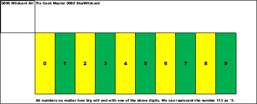

Search for a sorting method to identify primes. All numbers will end with one of the numbers listed below. These are the only possible choices no matter how large the number.
*1 *3 *7 *9 - after sorting of unwanted numbers , these are the numbers of interest to find primes from seven (7) and higher.
Let us go hunt for the sort and formula(s)
In the below slide are all the possible integers sorted by their least significant digit.
Once again remember *wildcard numbers.
There are ten piles of numbers. From *0 , *1 , *2 , . . . , *9. Yellow colored are even numbers , and green colored are odd numbers.